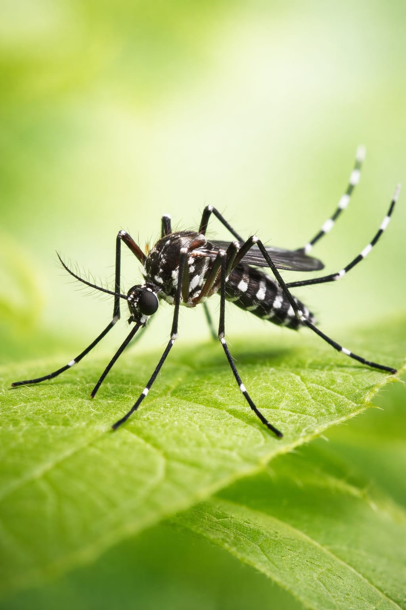
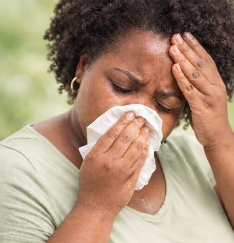
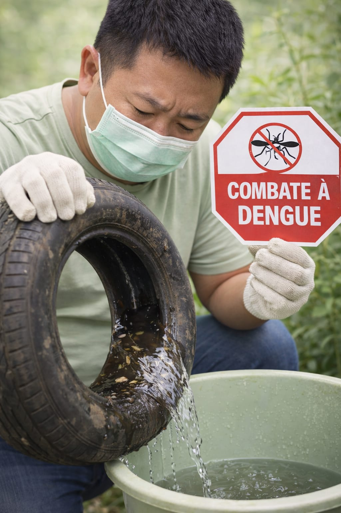

Um projeto educacional interativo para conscientizar estudantes sobre a prevenção,
sintomas e combate à dengue nas escolas.
🦟 Transmissão
Como a dengue é transmitida e o papel do mosquito Aedes aegypti.

A dengue é uma doença viral transmitida pela picada da fêmea do mosquito
Aedes aegypti, vetor urbano altamente adaptado ao ambiente humano.
Após se infectar ao picar uma pessoa doente, o mosquito pode transmitir o vírus
a outras pessoas durante toda a sua vida.
O Aedes aegypti apresenta hábitos predominantemente diurnos,
com maior atividade nas primeiras horas da manhã e no final da tarde.
Sua proliferação está diretamente relacionada a condições ambientais favoráveis,
especialmente a presença de água parada limpa.
Principais criadouros do mosquito
Caixas d’água, cisternas e reservatórios destampados
Pneus descartados, garrafas, latas e recipientes plásticos
Pratos de plantas, calhas obstruídas e ralos externos
Bandejas de geladeiras e aparelhos de ar-condicionado
O ciclo de vida do mosquito é rápido: em condições ideais, os ovos podem se
transformar em mosquitos adultos em aproximadamente 7 a 10 dias,
o que favorece surtos em períodos de calor e chuvas frequentes.
É importante destacar que a dengue não é transmitida de pessoa para pessoa.
A transmissão ocorre exclusivamente pela picada do mosquito infectado, reforçando
a importância das ações de controle ambiental e eliminação de focos.
A redução da proliferação do vetor é considerada a principal estratégia de
prevenção da dengue, sendo uma responsabilidade coletiva que envolve a comunidade,
o poder público e as instituições educacionais.
🚨 Sintomas
Principais sintomas da dengue e sinais de alerta.

Os sintomas da dengue geralmente surgem entre 4 e 10 dias
após a picada do mosquito infectado. A doença pode se manifestar de forma
assintomática, leve ou grave, variando conforme a resposta imunológica do
organismo e o tipo do vírus envolvido.
A fase inicial da doença, conhecida como fase febril,
caracteriza-se por início súbito de febre alta, geralmente acima de 38,5 °C,
acompanhada de sintomas sistêmicos intensos.
Sintomas mais comuns
Febre alta de início abrupto
Dor de cabeça intensa
Dor atrás dos olhos (dor retro-orbitária)
Dores musculares e articulares
Mal-estar generalizado e fadiga
Náuseas e vômitos
Em alguns casos, pode ocorrer o surgimento de manchas avermelhadas na pele,
conhecidas como exantema, geralmente acompanhadas de coceira.
Sinais de alerta para formas graves
Dor abdominal intensa e contínua
Vômitos persistentes
Sangramentos (nariz, gengiva ou fezes)
Tontura ou sensação de desmaio
Sonolência excessiva ou irritabilidade
A presença de sinais de alerta indica risco de evolução para formas graves da
dengue, como a dengue hemorrágica, exigindo atendimento médico
imediato.
O reconhecimento precoce dos sintomas e a busca por assistência de saúde são
fundamentais para reduzir complicações e óbitos associados à dengue.
🧪 Tratamento
O que fazer ao apresentar sintomas.
Atualmente, não existe um tratamento específico capaz de eliminar o
vírus da dengue. O manejo clínico da doença é baseado no alívio dos
sintomas, na prevenção de complicações e no acompanhamento cuidadoso da
evolução do paciente.
A maioria dos casos de dengue pode ser tratada em casa, desde que não haja
sinais de gravidade. O tratamento domiciliar deve ser realizado com orientação
médica e acompanhamento dos sintomas.
Medidas recomendadas no tratamento
Repouso absoluto durante o período febril
Ingestão abundante de líquidos para evitar desidratação
Uso de medicamentos para controle da febre e da dor, somente com prescrição médica
A hidratação é considerada a principal medida terapêutica,
podendo ser realizada por via oral ou intravenosa, conforme a gravidade do
quadro clínico.
Medicamentos que devem ser evitados
Ácido acetilsalicílico (AAS)
Ibuprofeno
Diclofenaco e outros anti-inflamatórios
Esses medicamentos aumentam o risco de sangramentos e podem agravar as formas
graves da doença.
Quando procurar atendimento médico
Persistência da febre por mais de 48 horas
Presença de dor abdominal intensa
Vômitos frequentes
Sinais de sangramento
Dificuldade para ingerir líquidos
Em casos mais graves, pode ser necessária a hospitalização para monitoramento
contínuo, administração de fluidos intravenosos e suporte clínico adequado.
O tratamento correto e o acompanhamento precoce reduzem significativamente o
risco de complicações e mortalidade associadas à dengue.
🏡 Prevenção
Como evitar água parada, eliminar focos do mosquito e formas de proteção.

A prevenção da dengue é a principal e mais eficaz estratégia
para o controle da doença, uma vez que não existe tratamento antiviral
específico capaz de eliminar o vírus após a infecção.
Além das medidas ambientais, atualmente também existe vacina contra a dengue,
que ajuda a reduzir o risco de infecção e de formas graves da doença.
No entanto, a vacinação não substitui a eliminação da água parada,
sendo uma medida complementar de proteção.
O combate à dengue depende principalmente da eliminação dos focos de
reprodução do mosquito Aedes aegypti.
Principais medidas de prevenção
Manter caixas d’água e reservatórios bem vedados
Eliminar pratos de plantas ou preenchê-los com areia
Descartar corretamente pneus e garrafas
Limpar calhas e ralos com frequência
Manter lixeiras sempre fechadas
A prevenção contínua, aliada à vacinação quando disponível, é a forma mais eficiente
de reduzir os casos de dengue e proteger a saúde da população.
Teste o que você aprendeu clicando no Quiz abaixo: